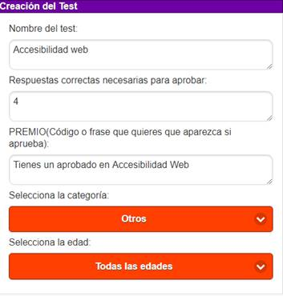
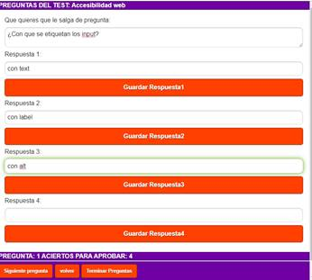
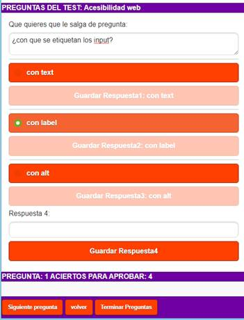
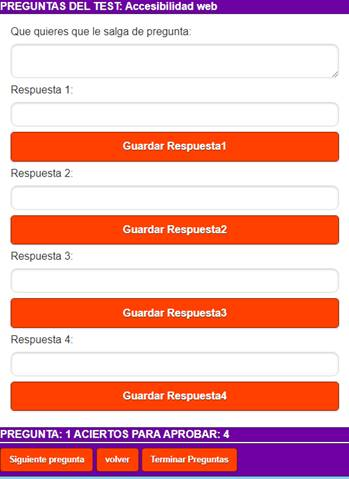
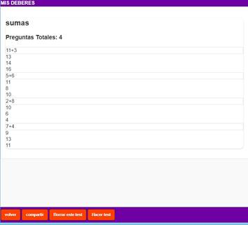
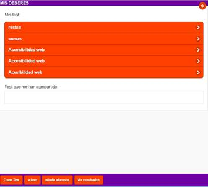
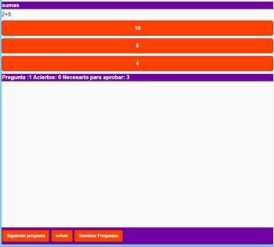
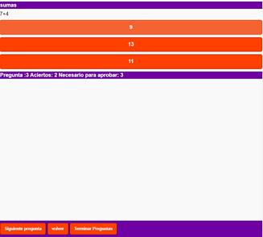

¿Cómo se los aciertos que tengo?
Se te va informando de los aciertos necesarios para aprobar y de los que tienes según vas pasando de pregunta

t-reto una aplicación tanto web como app donde padres, profesores y alumnos puede crear testsy compartir entre alumnos, amigos, profesores u padres.
1.-Nos permite premiar a los alumnos que aprueban el test con un código o frase motivadora. Los padres pueden introducir la clave de desbloqueo de algún dispositivo (Tablet, móvil, consola).
2.-Se pueden crear los test desde la web, lo que supone la ventaja de que es más fácil crearlos en ordenador que en un móvil, viéndose en los dos dispositivos.
3.-Permite compartir con todos los alumnos de una clase y se permite que se comparta entre profesores, padres, amigos , etc..
4.-Las respuestas que se introducen se convierten en botones lo que hace que sea muy rápida la contestación de los tests
5.-Existe un apartado de estadísticas, donde se puede ver cuántos alumnos han aprobado y cuáles no, así como la cantidad de aciertos y errores.
6.-También hay estadísticas de los test que yo hago.
Para acceder a la aplicación primero ha de registrarse.
Darse de alta es muy sencillo solo hay que poner un correo y password<, se valida que sea un correo valido, las contraseñas nunca se guardan, la aplicación esta securizada y las contraseñas se guardan en un sistema cifrado diseñado por Google, solo tu conocerás tu clave, puedes pedir la clave si se te ha olvidado y te la enviará por correo.
No hay problema, vuelve al inicio y pincha sobre el enlace “¿Se te ha olvidado la contraseña?”
Para crear un test tendrás que dar al botón de crear y en la pantalla aparecerá:
Nombre del (necesario): Deberás poner un nombre identificativo del test
Respuestas correctas necesarias para aprobar (opcional): Deberás introducir un nº de las respuestas que han de estar bien para aprobar el test, será necesario para que se dé el premio.
Premio(Obligatorio): Código o frase motivadora, que en el caso de igualar o superar las respuesta correctas necesarias
Categoría: Se ha de seleccionar una categoría de la listas, para posteriores búsquedas
Edad: Se ha de seleccionar de la lista un rango de edades para quien está dirigido el test para posteriores búsquedas.

Una vez rellenos los campos pulsaremos sobre el botón “Crear Test” ,nos aparecerá un mensaje en verde informativo donde se nos indica que se ha creado y empezaremos a introducir las preguntas con sus posibles respuestas
Se nos muestra una pantalla en la que aparece:
Que quieres que le salga de pregunta: Aquí introducirás un texto libre de pregunta
Respuesta 1, 2, 3, y 4: Se da la posibilidad de introducir hasta 4 respuestas, será un texto libre, este texto libre luego cuando el test se visualice se transformará en un botón, pudiendo haber hasta 4. Cada vez que introducimos una respuesta se ha de dar al botón “guardar respuesta”

La respuesta correcta se ha de dejar marcada con un radio seleccionado que aparece en verde a la izquierda de cada respuesta

Una vez creada la pregunta se nos mostrará un mensaje informativo de color verde y aparecerá la siguiente pregunta.
Se nos indicará el siguiente número de pregunta y aparecerá en blanco para rellenar<

Cuando queramos podemos terminar de hacer preguntas dando al botón “Terminar preguntas”, se nos mostrará un mensaje en verde indicándonos que se ha terminado el test y nos llevará a la pantalla donde se listan los test.
Los test aparecen listados, y podremos presionar sobre cada uno de ellos para ver las preguntas pero sin sus respuestas

Hacer un test es tan sencillo como selecionarlo de la lista, nos mostrará la pantalla con las preguntas del test seleccionado y presinaremos en “Hacer Test”

Al presionar sobre hacer test nos aparecerán los botones con las posibles respuestas.

Según presionemos sobre la respuesta nos aparecerá la siguiente pregunta, se nos informará cuando sea la última pregunta, pero podremos terminar el test cuando nosotros deseemos presionando sobre “Terminar Preguntas”.
Se te va informando de los aciertos necesarios para aprobar y de los que tienes según vas pasando de pregunta
Aparte de indicarte en cada pregunta los aciertos que tienes y cuantos son necesarios para aprobar, al finalizar aparecerá un texto informativo con tu premio en caso de aprobar
